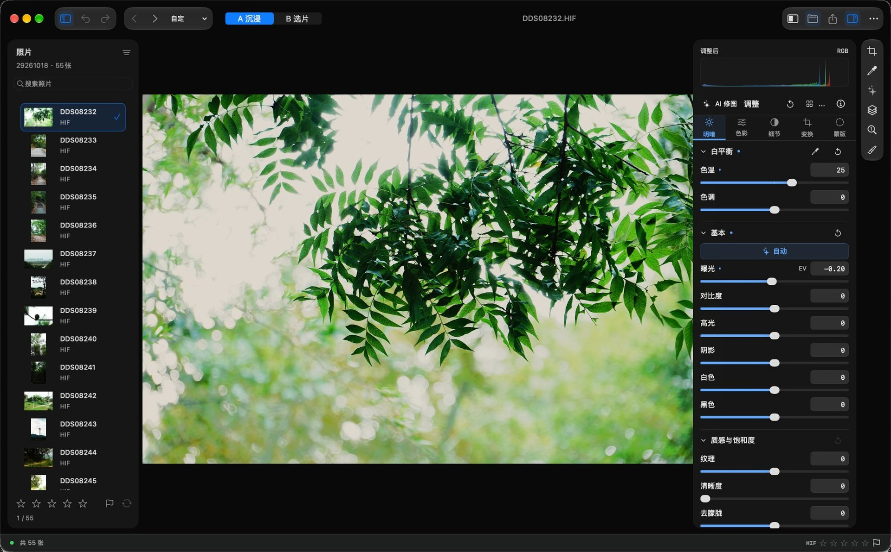
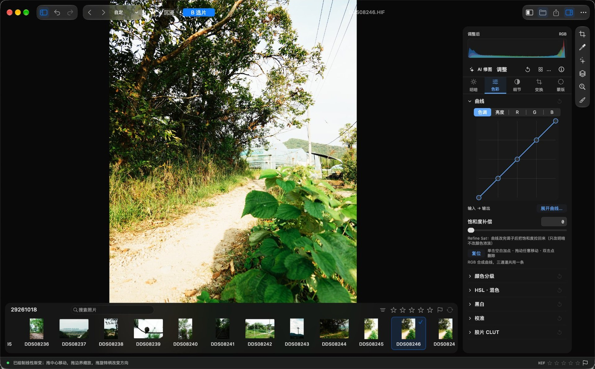
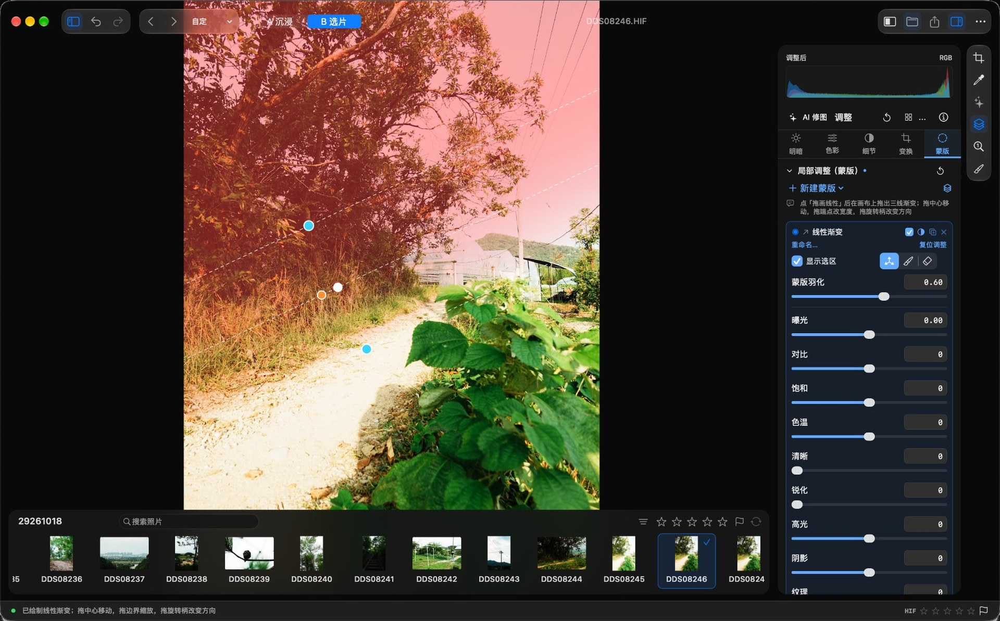
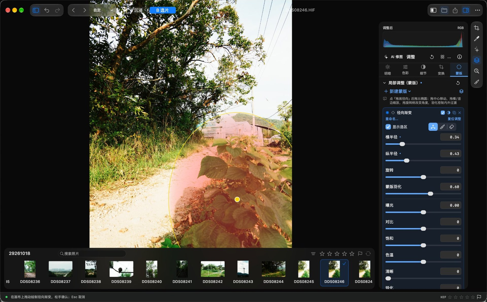
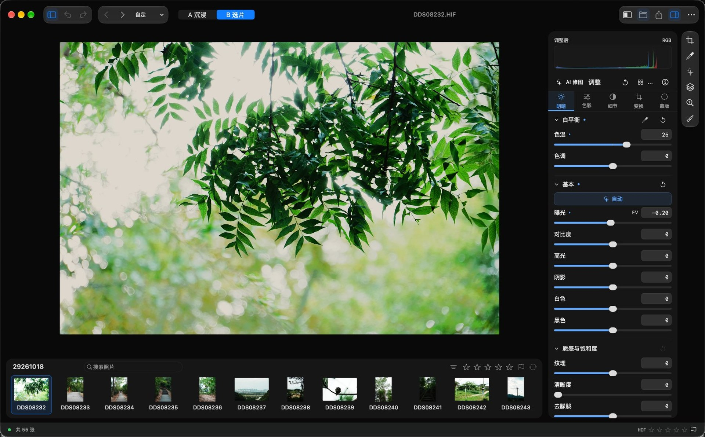
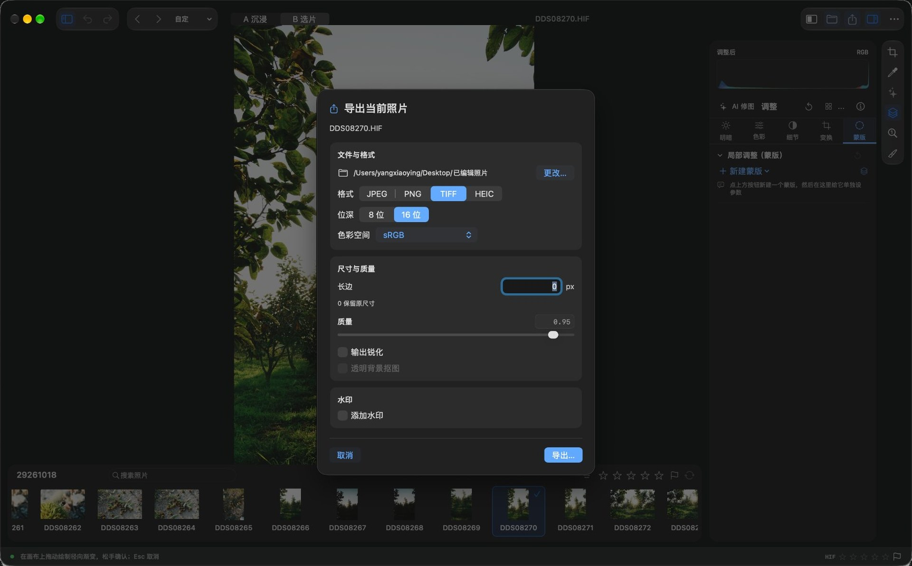
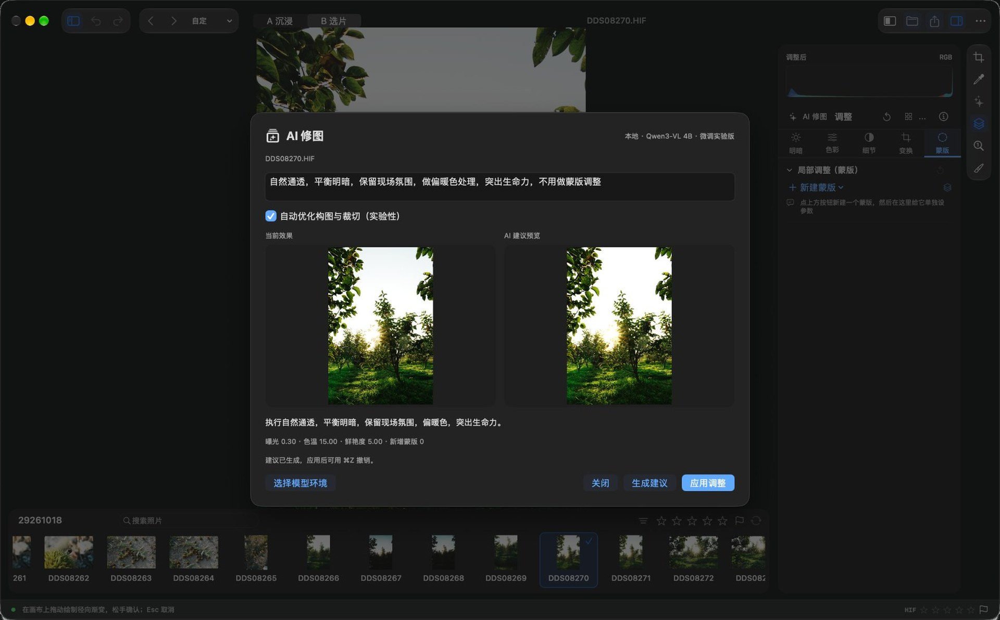
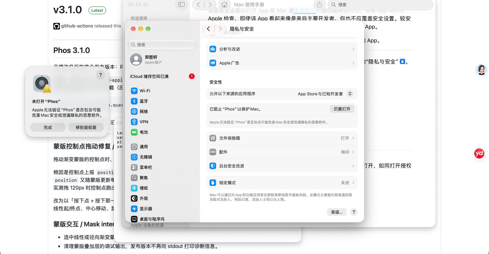

Native macOS · Swift · Core Image
Phos
RAW editing, done with precision.
A non-destructive RAW photo editor built for macOS. Every pixel is processed on your Mac; edits are written to a sidecar file next to the original, and not a single byte of the original is changed. Version 4.0 rebuilt the entire workspace and added optional on-device AI editing.

01Try it
No download — just drag a slider.
Below is a demo that follows Phos’s actual render order: tone, color, film CLUT, then local masks, with parameters matching the real panels. Sliders, the dots on the tone curve, and the mask handles on the canvas are all draggable — the image updates live.
Tone & light
Histogram
Color
Tone curve
Film CLUT
Grain & vignette
Local adjustments (masks)
02Interface
A workflow you can see.
These five screenshots are from the real app and map to features that exist today — nothing invented. The workspace offers two layouts: A List for detailed one-at-a-time editing, B Filmstrip for continuous culling — both share the same edit state.





03Design
Graphite × champagne gold.
The interface is built on neutral graphite panels; champagne gold marks only selection and editing states, while everything else stays restrained. The order comes from a strict grid: a fixed line-height rhythm, tabular figures, and hairline dividers.
Restrained gold
Gold doesn’t decorate — it reports state: selection rings, slider fills, film cards, the primary export button. If it’s gold, you’re editing.
Strict grid
A fixed 26 / 27 / 34 px line-height rhythm, 16 px padding throughout, right-aligned tabular figures. Dense, never messy.
Masks you can read
Guides are 1 px white dashed lines, and handle colors encode their job: linear gradient endpoints are cyan, the center is white, the rotation handle is amber; radial gradients are yellow. The color tells you what you can drag.
04Features
The everyday tools, made complete.
No feature bloat. Every adjustment is written to a sidecar next to the original; the original file is never modified, and you can always go back.
RAW decoding
Mainstream RAW formats such as ARW / CR3 / NEF, plus HEIF / HEIC / HIF, JPEG, PNG, TIFF, and AVIF.
Tone & color
Exposure, contrast, highlights, shadows, whites and blacks, texture / clarity / dehaze, white-balance gray-point eyedropper, HDR; five-channel tone curve, HSL mixer, color grading, black & white, and calibration.
Film CLUT emulation
HALD CLUT loading, including Kodak 2383 / 2393 print emulations, 64³ cube resampling, adjustable strength.
Local masks
Linear and radial gradients, brush, color range, luminance range, Select Subject, Select Person, subject cutout, and depth paint — nine in all. Each mask has its own adjustment stack and can be inverted, duplicated, or deleted.
Batch workflow
Multi-select and sync adjustments, restore snapshots, named presets, named snapshots, and multi-exposure compositing.
Professional export
8-bit and 16-bit TIFF in multiple color spaces, long-edge resizing, text and image watermarks with nine-point placement, pinned export folder.
A / B dual-layout workspace
The main window rebuilt in 4.0: A List for one-at-a-time editing, B Filmstrip for continuous culling. The toolbar shares a centerline with the system traffic lights, the list and inspector widths are draggable, and switching layouts doesn’t interrupt editing.
On-device AI editing
Describe the change in Chinese; the model suggests global slider values and local masks, with a preview before anything is applied. Inference runs on-device — photos are never uploaded. Experimental; the model must be installed separately.
04On-device AI · Experimental
Say it in Chinese. It edits.
Open AI Edit at the top of the adjustment panel and write your request in Chinese — for example, 「压暗天空，人物提亮一点，绿色别太艳」 (“darken the sky, brighten the subject a little, don’t make the greens too vivid”). The model outputs parameters only; it never generates or replaces your photo.
4.1 ships new fine-tuned weights: on the same 301 controlled validation prompts, first-pass strict completion rose from 51.8% to 94.0%. Only the 1.3 MB adapter bundled with the app changed — the base model does not need to be downloaded again. These numbers come from a development validation set, not an independent test, and say nothing about aesthetics.
Say it precisely, it obeys
Requests like “crop 5% off each side, keep the full height” are computed by code, not estimated by the model. Auto-crop first validates dimensions and retained area; an invalid plan is sent back for one retry, and after two failures nothing is applied.
Keep means keep
When you explicitly ask to “leave exposure alone” or “keep white balance unchanged,” those sliders are removed from the model’s writable fields and checked again after decoding. Mixed global and local requests are supported just the same.
Preview first, then decide
Generated plans show a preview and are only written after you confirm; each apply is one undo. Local effects are checked against the direction of real rendered pixels and retried or blocked when they don’t match.

AI requires a separately installed base model (~3.1 GB; internet needed for the first install); the small adapter bundled with the app is about 1.3 MB. All regular editing works without installing the model. The feature is still experimental: detail understanding, local adjustments, and auto-framing can all misjudge, so trust the preview. Installation steps →
05Install
Four steps to start editing.
Phos isn’t notarized by Apple yet, so macOS asks for permission once on first launch and never again. This is how macOS treats every non-notarized app — not something unique to Phos.

Download and open the disk image
Click “Download for macOS” on this page, or use this direct link, download Phos-macOS-apple-silicon.dmg, then double-click to open.
Drag it into Applications
In the disk image window, drag Phos into the Applications folder next to it, then eject the image.
Allow it on first launch
Phos is locally signed but not notarized by Apple, so it is blocked the first time. Double-click Phos, click “Done” to dismiss the dialog, then immediately open System Settings → Privacy & Security, scroll to the bottom, and click “Open Anyway”.
That button disappears about an hour after the dialog appears, so click it right away. After that, double-clicking opens the app normally.
Or skip it with one command
Run this line in Terminal to remove the quarantine flag; after that a double-click opens it:
xattr -dr com.apple.quarantine /Applications/Phos.app
06FAQ
Questions you might have.
Pricing, format support, privacy, and installation — the questions we hear most about Phos.
Is Phos free?
Free and open source under the MIT license. No subscription, no in-app purchases, no account, and no “Pro” tier.
Which macOS versions and Macs are supported?
macOS 26.0 or later on an Apple-silicon (M-series) Mac. Since 3.2.5 the minimum is 26.0, up from 15.0; on older systems, keep using 3.2.4. Only Apple-silicon builds are provided — Intel Macs aren’t supported yet.
Which cameras’ RAW files are supported?
Phos uses macOS’s built-in RAW decoding (Core Image and ImageIO), so any RAW file that Preview can open can be edited — including mainstream formats from Canon (CR2 / CR3), Nikon (NEF), Sony (ARW), Fujifilm (RAF), and Adobe DNG.
Support for newer cameras depends on whether the macOS version you’re running already includes a decoder for that model.
Are my photos uploaded? What is the network used for?
No. Photos are processed entirely on your Mac — no cloud, no account, no telemetry.
The only network activity is a single check of the latest version number at launch; the request contains nothing about you, your photos, or this Mac.
How is it different from Lightroom?
Phos is local-first: no subscription, no cloud sync, no mobile app, with a focus on doing RAW decoding, tone and color, film CLUT emulation, local masks, and batch export really well.
It’s built for personal photography workflows where photos stay entirely on your own machine.
What if macOS blocks Phos on first launch?
This is the standard prompt every app without Apple notarization gets — not something specific to Phos. Double-click Phos → click “Done” → open System Settings → Privacy & Security → scroll to the bottom and click “Open Anyway”.
You can also run xattr -dr com.apple.quarantine /Applications/Phos.app in Terminal to remove the quarantine flag for good.
Does it support batch processing?
Yes. Batch import, syncing one photo’s adjustments to others, and batch export (including watermarks).
Is there a Windows or iPad version?
The macOS app is the primary platform. Windows has a separate experimental port (4.0.1, ported from the macOS 4.0.1 source), maintained separately from macOS: Apple’s Vision and Core Image are replaced with local implementations, there is no on-device AI editing, and it isn’t code-signed. It’s available from the downloads section.
An iPad version is still being assessed for feasibility, with no releasable timeline.
How can I report issues or contribute?
File an Issue or a Pull Request at the GitHub repository. The project is written in Swift, built on Core Image, Vision, and AppKit.
07Get started
Free, open source, offline.
No account, no subscription, no cloud upload. Your photos stay on your Mac.
Requires macOS 26.0 or later · Apple silicon · MIT license · Version v4.2.0 (7.28 MB)
Download mirrors · switch if one is slow
- Direct linkCloudflare, recommended
- jsDelivr CDNNodes in China
- jsDelivr (backup node)Try another route
- GitHub PagesBackup
- GitHub ReleasesRequires GitHub access
All of the above serve the same file, with an identical SHA256: 2c94da0a…eb9d (full value in SHA256.txt). After downloading, verify it in Terminal with shasum -a 256 ~/Downloads/Phos-macOS-apple-silicon.dmg.
Prefer a zip? There’s one here too (same contents).
Optional: on-device AI model
- Phos-Optional-Model-Installer.zip5.9 KB · scripts and checksums only
The app already ships with a ~1.3 MB fine-tune adapter, so opening the AI panel requires no extra download; but for the AI to actually produce suggestions you also need a ~3.1 GB base model and an MLX runtime. This 5.9 KB package sets both up — it contains no weights itself and pulls a pinned version from Hugging Face, verifying the SHA256 of every file.
All regular editing works without installing it. AI is experimental; installing it or not doesn’t affect editing itself.
Before you install
· An Apple-silicon (M-series) Mac running macOS 26 or later
· Python 3.11 for arm64 installed (from the python.org downloads page; choose the macOS 64-bit universal2 installer)
· At least 8 GB of free disk space (weights are ~3.1 GB, plus Python and MLX dependencies)
· The first install needs internet access to pypi.org and huggingface.co
· 16 GB of unified memory is the configuration tested here; 8 GB is unverified
Three steps to install
- Install Python 3.11. Download the installer from the link above and double-click to install, then run
python3.11 --versionin Terminal — if it prints a version number, you’re set. - Unzip it and double-click “安装模型.command” (Install Model). If macOS says “cannot verify the developer”, right-click the file → “Open” → “Open” again. A Terminal window opens and installation begins.
If you can’t reach Hugging Face from mainland China, double-click “国内网络安装.command” (China-network install) instead — see the next section. - Let it finish. It installs pinned MLX dependencies, downloads the model from Hugging Face (~3.1 GB, depending on your connection), then verifies each file’s SHA256. When you see “installation and verification complete,” you’re done.
Installing from mainland China
The installer pulls the model from huggingface.co and dependencies from pypi.org by default. Both can be unreachable or very slow on some networks, especially Hugging Face. You can install without a proxy.
The simplest option: unzip and double-click “国内网络安装.command” (China-network install). Bundled since 4.0.1, it swaps the two download sources for hf-mirror and the Tsinghua PyPI mirror; everything else is identical to the normal install, with no terminal needed.
To run it manually or choose other mirrors, open Terminal in the unzipped folder (right-click the folder → Services → New Terminal at Folder) and paste:
HF_ENDPOINT=https://hf-mirror.com \
PIP_INDEX_URL=https://pypi.tuna.tsinghua.edu.cn/simple \
python3.11 install_model.pyMirrors only change where files come from, not verification: every model file is still checked against the manifest, and a single wrong byte stops the install with an error — no corrupt files get in. To test a mirror first, open the model page on hf-mirror.com.
If the Python installer downloads slowly from python.org, use the Huawei Cloud mirror: mirrors.huaweicloud.com/python, and pick a 3.11.x macOS universal2 installer.
Using it after installation
It installs to ~/Library/Application Support/Phos/MLX by default, and Phos finds it automatically — open any photo and click “AI Edit” at the top of the adjustment panel. No further configuration.
To install elsewhere, run python3.11 install_model.py --environment /absolute/path/Phos-MLX in Terminal; afterwards use “AI Edit → Choose model environment” in the app and select the outer folder that contains both .venv and model.
To check the install, run python3 install_model.py --verify-only. To uninstall, just delete that folder.
FAQ
It says “Please install Apple Silicon Python 3.11”
Either Python isn’t installed, or the Intel build was installed. Download the universal2 installer from python.org again; after installing, run python3.11 --version in Terminal to confirm, then double-click “安装模型.command” again.
What if the download fails halfway?
The script won’t overwrite an existing environment, and partial progress is kept. Switch to a network that can reliably reach Hugging Face and double-click “安装模型.command” again; alternatively, use --environment to install into a brand-new empty directory. The script never switches to an unvetted mirror on its own.
I downloaded the model files — why doesn’t it work?
Weights and runtime are two different things. Putting only the .safetensors files in a folder doesn’t provide the MLX dependencies; the installer must set up the .venv. Phos needs both before it can start the local inference server.
Can I move or copy that folder after installing?
Moving it isn’t recommended. The .venv records absolute interpreter paths and breaks if moved. To relocate, reinstall with --environment.
Does AI upload my photos anywhere?
No. Inference runs locally at 127.0.0.1 and photos never leave this Mac. Network access is needed only during installation, to download the model and dependencies.
The base model is mlx-community/Qwen3-VL-4B-Instruct-4bit (pinned version 2fd8dacb…; China mirror: hf-mirror), licensed under Apache-2.0. Attribution and the full license text ship inside the app’s PhotoAIAdapter directory. Phos’s academic-use notice does not change the licensing terms of third-party models.
Windows build · Experimental port
- Phos-4.0.1-Windows-x64.zip323 MB · Windows 11 x64
Ported from the macOS 4.0.1 source, maintained separately from the macOS build, with its own version numbering. Unzip it and double-click Phos.exe in the root folder; it must stay in the same directory as the app\ folder.
It isn’t exactly the same as the macOS build. Apple’s Vision and Core Image are replaced with local implementations (MODNet / BiRefNet / OpenCV / D3D11), so subject segmentation, edges, and color can differ; it does not include on-device AI editing; it also lacks the macOS 4.1 interface update (advanced editing, unified glass, crop hot zones, auto-level).
It isn’t code-signed, so the first launch is blocked by Windows SmartScreen — click “More info → Run anyway”. Full differences and known limitations are in the release notes.